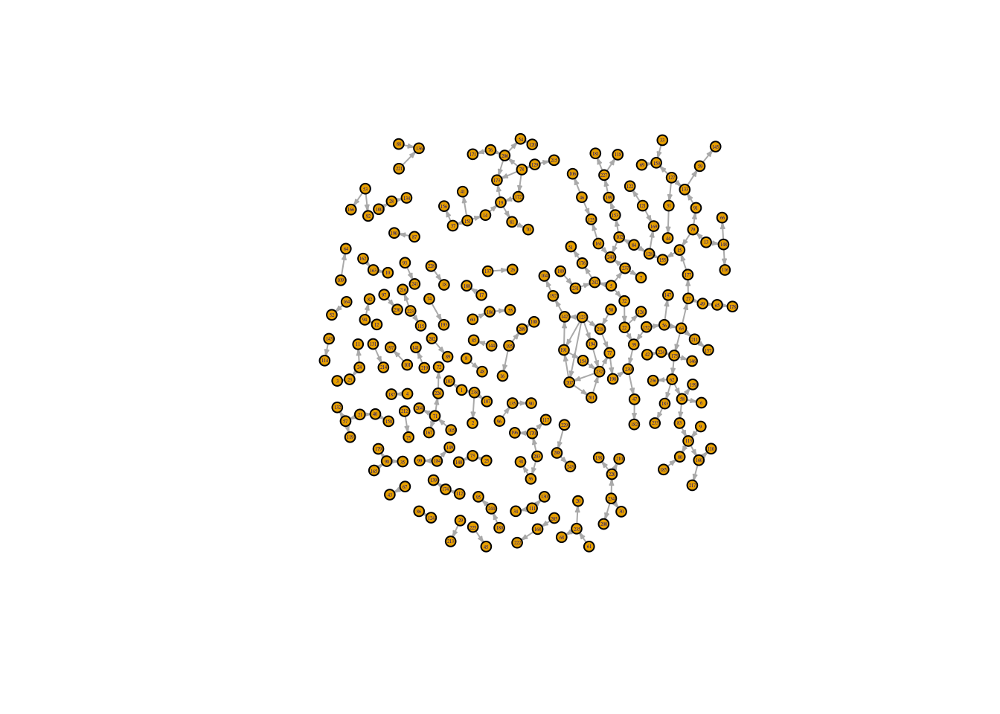

The UFClefties question
I recently came across an interesting question while working through the problem sets in the Statistical Rethinking course. This problem asks us to estimate the advantage of left-handedness within the UFC based on hand coded UFC data from this paper. The question is motivated by the fact that lefties are over-represented in the UFC (~20% of fighters), as well as other sports like tennis, fencing, etc. The dataset includes info on each UFC fight in the years 2010-2012, including the winner and loser, and the handedness of each fighter
The solution set (and the paper) treat the abilities of each fighter as purely unobserved; i.e. the following causal structure is assumed for the data:
However we are given some limited information on fighter abilities, since some of the fighters fight in multiple matches. We can include this information with a Bradley-Terrey model:
Bradley-Terry models
Wikipedia defines a Bradley-Terry model as:
\[\Pr(i > j) = \frac{a_i}{a_i + a_j}\]
Where
- \(\Pr(i > j)\) is the probability of a pairwise comparison of element i vs element j is true; e.g. in an MMA match between fighter i and fighter j, fighter i wins
- \(a_i = e^{\beta_i}\), where \(\beta_i\) is a real value assigned to element i; e.g. the skill of fighter i
When transformed to the log-odds scale we get:
\[\operatorname{logit}(\Pr(i > j)) = \beta_i - \beta_j\]
It seems that this class of models describes the UFClefties question. Andy Milne describes how to parameterize this class of models for brms in this stan forum post; essentially we need a \(\beta\) variable for each fighter with a value of 1 if the fighter won the match, a value of-1 if the fighter lost, and a value of 0 otherwise. Adding handedness gives the following model
\[\operatorname{logit}(\Pr(i > j)) = L + \beta_i - \beta_j\]
Where \(L\) denotes the ‘lefty advantage’ and encodes the diasteriomeric relation of the match; \(L\) takes the following values:
- 0 when a righty fights a righty or a lefty fights a lefty
- 1 when a lefty wins over a righty
- -1 when a righty wins over a lefty
Are we actually going to get much info on fighter ability from going about it this way? Let’s poke a bit at the data to find out.
Exploratory
Let’s graph the fights in the dataset with each fighter as a vertex, and each fight as an edge:

That might be a bit difficult to see, depending on your screen width; here’s a tabulation of cluster size (the number of fighters connected to one another by any number of fights):
Joining with `by = join_by(fighter)`# A tibble: 12 × 3
cluster_size fighters cumulative
<int> <int> <int>
1 2 44 44
2 3 45 89
3 4 16 105
4 5 5 110
5 6 24 134
6 10 10 144
7 11 11 155
8 15 15 170
9 17 17 187
10 18 18 205
11 19 19 224
12 20 20 244A good chunk of the fighters are unfortunately in very small clusters, and about a fifth are in clusters of size 2; it does look like there’s some good info in the graph structure though. Let’s graph a few of the largest clusters:


There’s plenty more exploration to do, and this is left as an exercise for the reader.
The Model
Dataset
The dataset includes 244 fights, and a Bradley-Terry model requires a variable for each fight; so here’s the code I used to MUNGE the data:
Code
# MUNGE the data:
d <- UFClefties |>
mutate(
Y = 1L, # response var; brms likes it this way
# diasteriomeric description of the fight; lefty win/lose/0:
L = as.integer((fighter1.lefty - fighter2.lefty) * (2*fighter1.win - 1)),
fight = row_number(), # helps pivot_wider keep track of things
winner = if_else(fighter1.win ==1, fighter1, fighter2),
loser = if_else(fighter1.win ==0, fighter1, fighter2)) |>
select(Y, L, fight, winner, loser) # gets rid of unnecessary vars
# Prepare the Bradley-Terry vars (MUNGE again):
d <- rbind(
d |>
mutate(fighter = winner,
outcome = 1L) |>
select(Y, L, fight, fighter, outcome),
d |>
mutate(fighter = loser,
outcome = -1L) |>
select(Y, L, fight, fighter, outcome)) |>
pivot_wider(
id_cols = c(Y, L, fight),
names_from = fighter,
names_prefix = "f",
names_sort = TRUE,
values_from = outcome,
values_fill = 0L) |>
select(-fight)Here’s a peek of the the fully-MUNGE-ed dataset:
# A tibble: 10 × 10
Y L f1 f2 f3 f4 f5 f6 f7 f8
<int> <int> <int> <int> <int> <int> <int> <int> <int> <int>
1 1 0 0 0 0 0 1 0 0 0
2 1 0 0 0 0 0 0 0 0 0
3 1 0 0 0 0 0 0 0 0 0
4 1 -1 0 0 0 0 0 0 0 0
5 1 1 0 0 0 0 0 0 0 0
6 1 0 0 0 0 0 0 0 0 0
7 1 0 0 0 0 0 0 0 0 0
8 1 0 0 0 0 0 0 0 0 0
9 1 0 1 0 0 0 0 0 0 0
10 1 -1 0 0 0 0 0 0 0 0brms Model
Fortunately brms follows the standard Wilkinson formula syntax (e.g. that of the R stats package, nlme, the Bayesian python package bambi, etc), so instead of writing out all of the variables in the formula we can specify the formula with bf(Y ~ 0 + ., family = bernoulli), where . denotes the sum of all variables (other than the response variable, Y); here 0 tells to brms not to automatically add an intercept to the model.
Code
BT_model <- brm(
formula = bf(Y ~ 0 + ., family = bernoulli),
prior = prior(normal(0, 1), class = b),
data = d,
chains = chains,
seed = (seed <- as.integer(Sys.time())))The seed used is 1738912100. Similarly, here’s the model from the paper and the solution set:
Code
model <- brm(
formula = bf(Y ~ 0 + L, family = bernoulli),
prior = prior(normal(0, 1), class = b),
data = d,
chains = chains,
seed = (seed <- as.integer(Sys.time())))The seed used for this one is 1738912172. Trace and trank plots look fine for both models; they will not be reproduced here.
Results
Here’s a tabulation of the the posterior probabilities with 89% HDI:
# A tibble: 2 × 7
Model value .lower .upper .width .point .interval
<chr> <dbl> <dbl> <dbl> <dbl> <chr> <chr>
1 Base_Model 0.00112 -0.380 0.387 0.89 mean hdi
2 BT_Model 0.0464 -0.448 0.613 0.89 mean hdi And the posterior predictive plot:

Conclusion
So in this case adding information on fighter ability didn’t affect the posterior distribution much, and probably didn’t contain much information given the small size of the clusters, and low average number of fights for each fighter; but it was an interesting exercise.